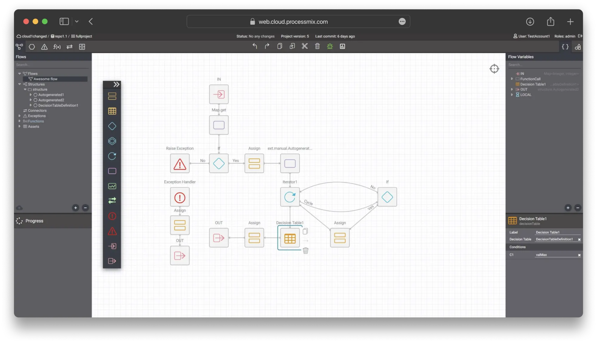
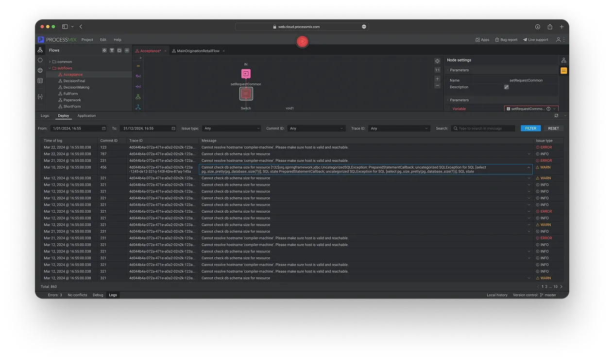
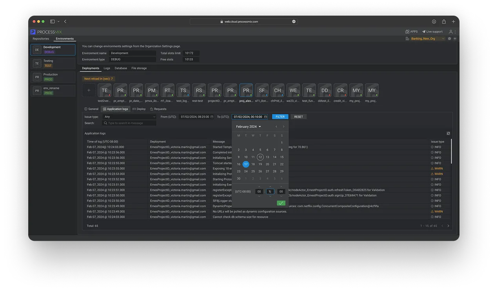
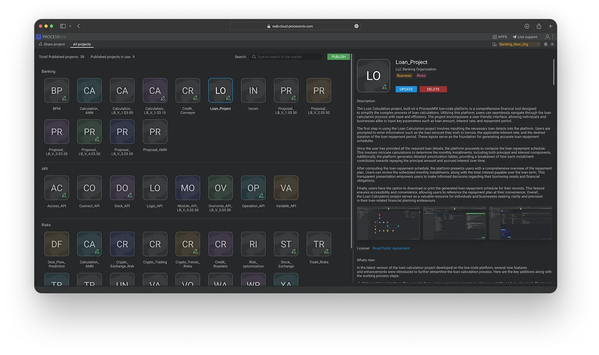
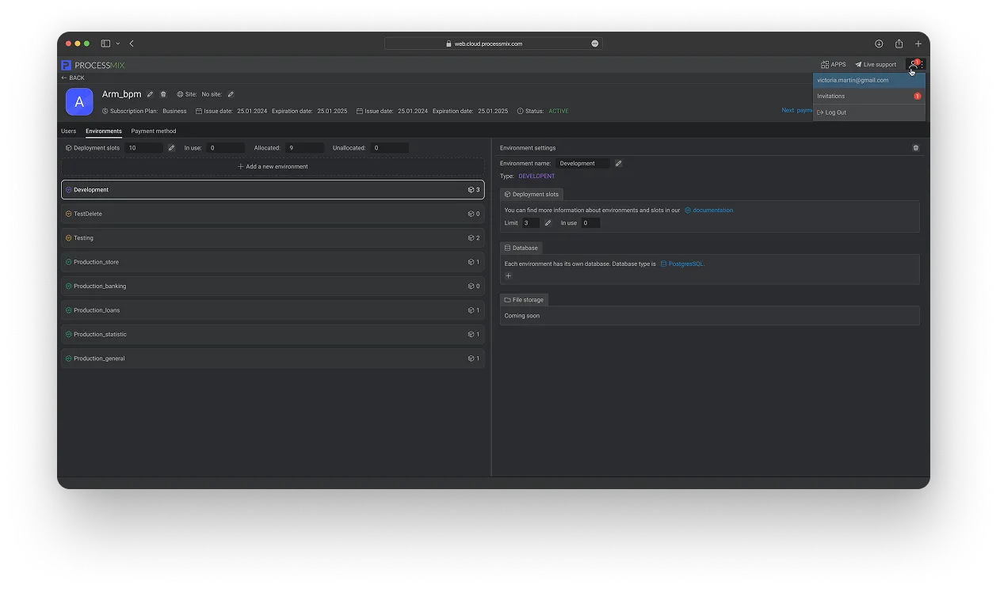

Enterprise B2B ⋆ Low-code platform ⋆ 2020–2024
ProcessMIX
I designed this low-code platform from raw nodes to a full IDE, builders and an admin portal, as its product designer.

I was invited to design the whole application.
In 2020 I was brought into the company to create the design of the whole product. When I started, there were only raw-looking nodes and a couple of functions: no layouts, no system, no clear user research. The users are professional developers who build back-end logic, so the interface had to handle big data tables and complex logic without getting in their way.
What I designed, in the order it grew.
The full IDE and the design of every node, the working space, panels and settings.
Windows for the builders: decision tables, scorecards, connectors, structures, PMML.
A new Home area appeared, and I designed all of its sections and modal windows.
The design of the landing page for processmix.com.
Presentations, advertising banners and YouTube covers for the product.
Audit first, then redesign.
Because the product had no clearly defined source data, I started with a UX audit of the existing interface, built a redesign roadmap, and used interviews, surveys and usability testing to find real problems. After the audit I wrote down a list of problems, then moved to wireframes and prototypes. We tested hypotheses with developers and refined them step by step.

From popups to full pages.
The builders started as popups, which left little room for big tables. I turned them into dedicated pages with resizable columns, clearer states and tooltips.


Panels that keep developers in flow.


A 30-page guideline built to be maintained.
I used Atomic design, adapted to the platform's needs. The result was a flexible system where changes such as a new color palette, input styles or nodes mid-development took less effort. The ProcessMIX Design Guideline has 30 pages and was made for long-term use as new services are added.


The Home section: portal, projects, marketplace.
When the Home section appeared, I designed all of its sections and modal windows. Click a screen to enlarge it.





Used in the company's internal projects.
After research, development and testing, ProcessMIX was integrated into the company's internal projects, replacing Java. Developer feedback was positive. The project taught me a lot about what developers and business stakeholders need from a code platform, and how to choose methods and design experiments that give real insight.
Screens show the product as designed in 2020–2024 and may differ from the current version.